Quant-LLM: Accelerating the Serving of Large Language Models via FP6-Centric Algorithm-System Co-Design on Modern GPUs
ATC ’24
Background and Motivation
Weight-only Quantization
- Effectively reduce LLM model size
- Using fewer bits to represent each weight
- Reducing GPU DRAM usage and access
Weight-only Quantization
- Only 4-bit and 8-bit quantization are well-supported on modern GPUs

More choices of bit-width for LLM quantization?
FP6: A “Sweet Spot” for LLM quantization: Better model quality
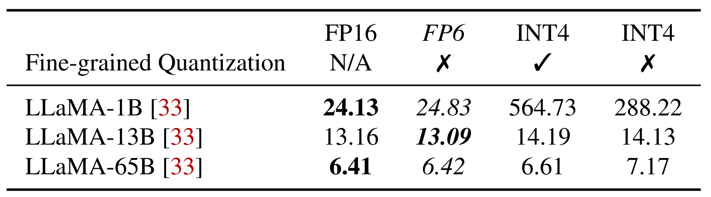
- INT4 causes more quality degradation
- INT4 requires fine-grained quantization
FP6: A “Sweet Spot” for LLM quantization: Lower inference cost
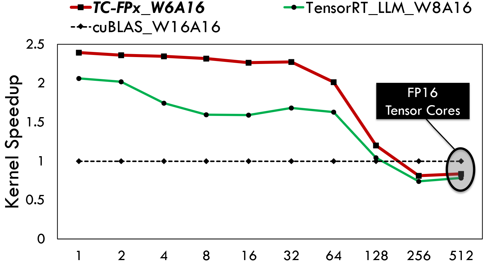
- Effectively reducing LLM serving cost, e.g., LLaMA-70b.
- DRAM usage: 130GB(fp16) => 49GB(fp6)
- Number of GPU required: 2 GPUs => 1 GPU
- Accelerating the speed of LLM token generation
- Up to 2.4x/1.45x faster than fp16/int8 baseline
Tensor Cores vs. SIMT Cores
- SIMT cores (CUDA cores) are responsible for general-purpose processing tasks operating on vector data.
- Tensor cores are specialized for accelerating matrix multiplication.
- Tensor cores has 16.0x higher FLOPS than SIMT cores on A100.
Design Choices and Challenges
Design Choice 1: single kernel or two kernels?
- Fused GPU kernel is better: on-the-fly dequantization
- Eliminating DRAM read/write of the de-quantized weights
- on-the-
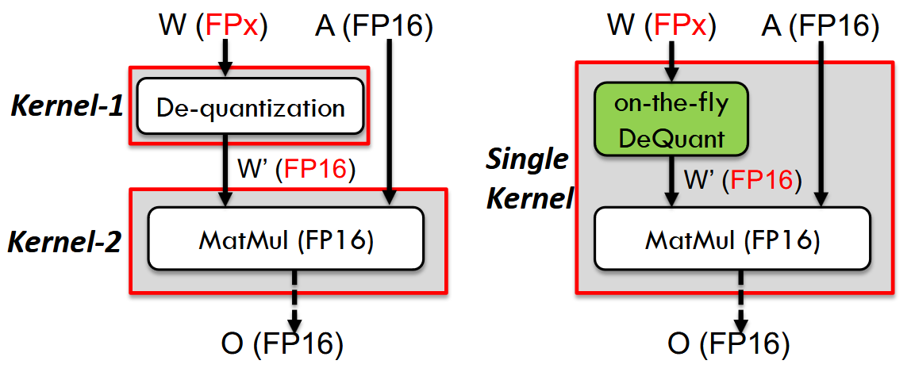
Design Choice 2: Tensor cores or SIMT cores?
- Some on-the-fly dequant methods use SIMT cores: AWQ.
- An order of magnitude slower
- A large fraction of SIMT core’s computational power is used on dequantization
Design Challenges 1: Irregular Memory Access
- Global DRAM => Shared memory => Per-thread private registers
- Minimal input of Tensor core is an 8x8 sub-matrix
- Each GPU thread should hold a pair of weights in its registers
- Minimal access size is a 32-bit word
- Alignment
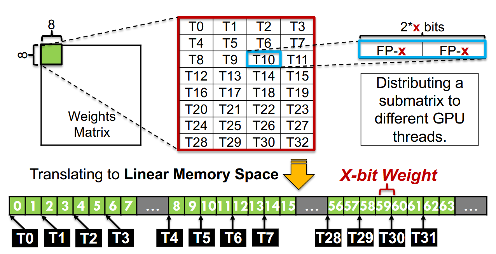
Design Challenges 1: Irregular Memory Access
- Global DRAM => Shared memory => Per-thread private registers
- Minimal input of Tensor core is an 8x8 sub-matrix
- Each GPU thread should hold a pair of weights in its registers
- Minimal access size is a 32-bit word
- Alignment
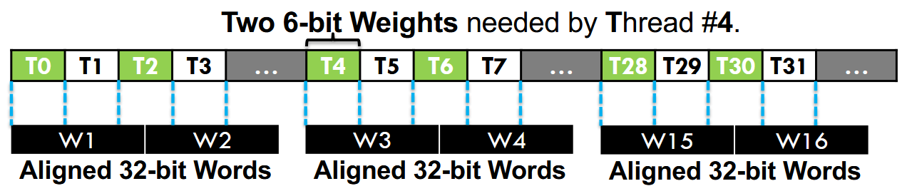
Design Challenges 2: High Computation Overhead of De-quantization
- The runtime overhead of FPx-FP16 de-quantization can be extremely high, which easily slows down the overall execution.
- Complex bit-wise operations
Design
Overview
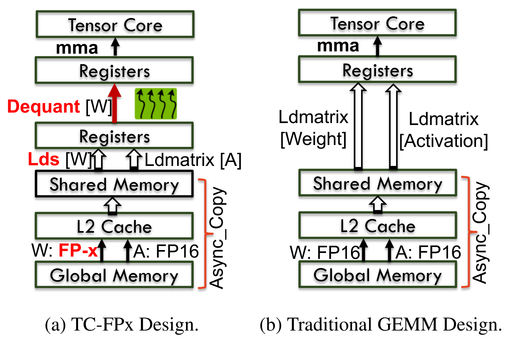
Ahead-of-time Bit-level Pre-packing
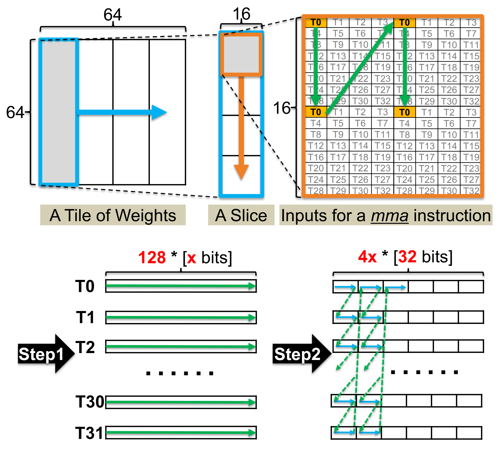
WARP-level tile (64x64) => Slices => 16x16 chunks
Each thread handles totally 128 weight. (64x64/32)
Step 1: Per-thread Wight Gathering. The weights are combined and stored continuously within each group and each group of weights will be consumed by a certain GPU thread.
Ahead-of-time Bit-level Pre-packing
WARP-level tile (64x64) => Slices => 16x16 chunks
Each thread handles totally 128 weight. (64x64/32)
Step 2: Bit-level Assembling per WARP.
- 128 x-bit items are viewed as 4x 32-bit items
- To begin with, the first 32-bit items of all threads are stored continuously.
SIMT-Efficient GPU Runtime
Parallel De-quantization
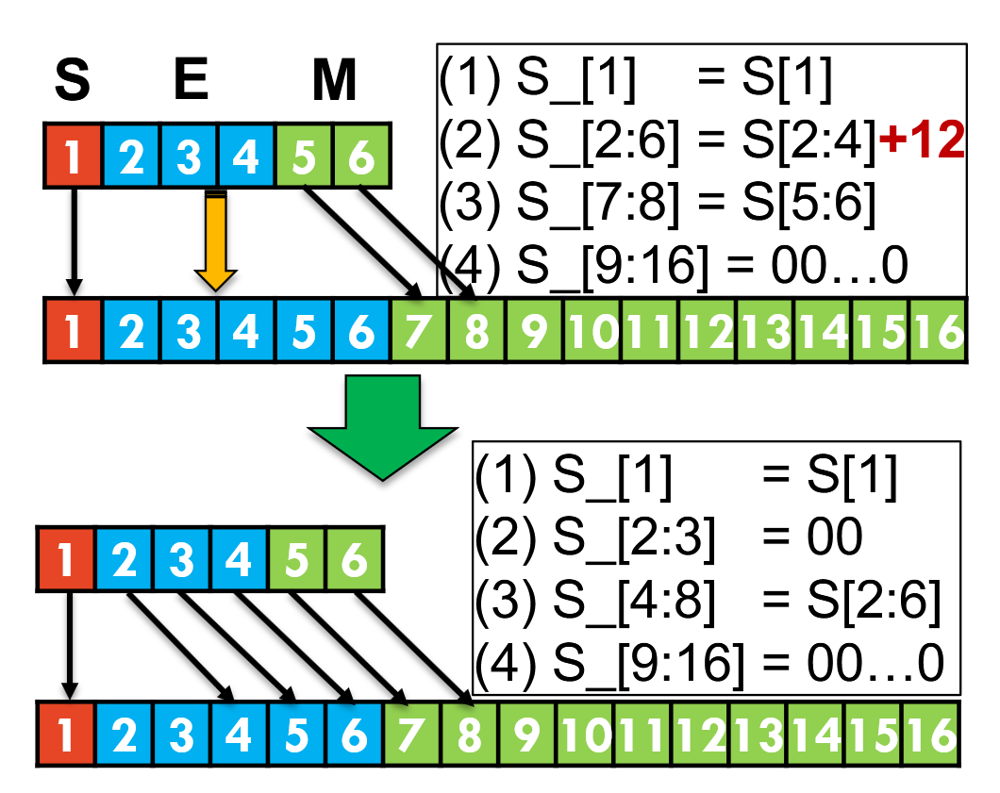
- Optimized FP6 to FP16 cast
- only 2 bit-wise AND + 1 SHIFT + 1 OR
Parallel De-quantization
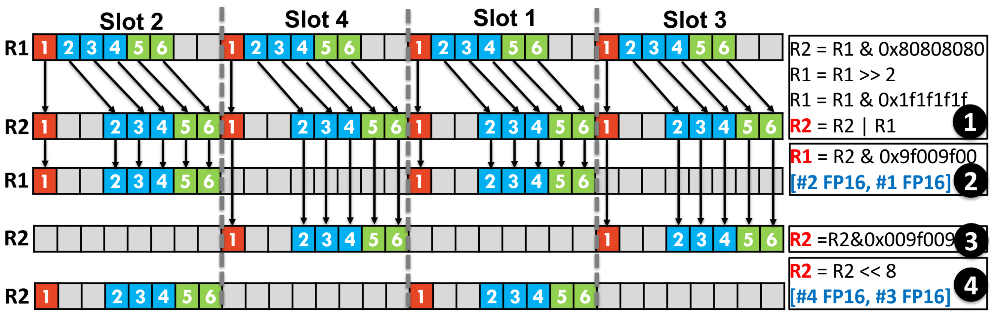
- Bit-level Parallelism
- The 32-bit registers are treated as four processing slots
- Each slot works independently with the same instruction but different input FP6 data
Weight Split and Stitching
- Ahead-of-time Weight Split
- FP6 => 2E + 4M
- store exponent and mantissa separately
- Runtime Weight Stitching
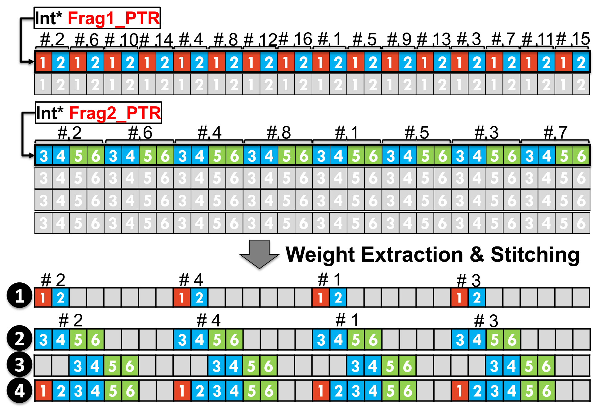
Software Pipeline
Slice-by-Slice De-quantization
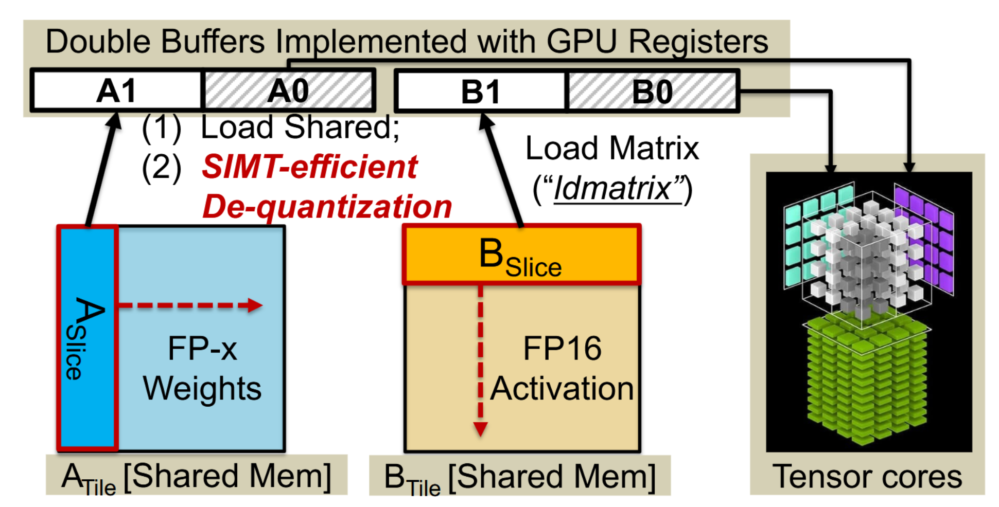
- load next tile (cp.async)
- MMA previsously dequantized slice (mma)
- Dequantize current slice
- load matrix to tensor core register (ldmatrix)
Effective Overlapping
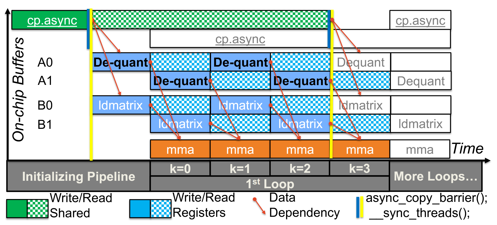
Evaluation
Environment Setup
- Kernel Benchmarking
- Linear kernel (MatMul)
- Baselines: cuBLAS, TensorRT-LLM, Bitsandbytes
- Platform: NVIDIA A100-40GB
- End-to-End LLM inference
- Decoding throughtput
- Prompt length: 0.5K
- Decode length: 1.5K
- Platform: NVIDIA A100-SXM-80GB
- Framework: DeepSpeed
Kernel benchmarking
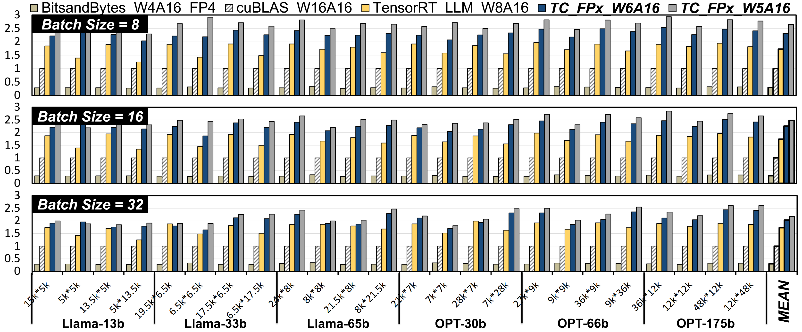
- 7.3X/2.2X/1.3X faster than FP4/FP16/INT8
- 8.1X/2.4X/1.4X faster than FP4/FP16/INT8
End-to-End LLM Inference
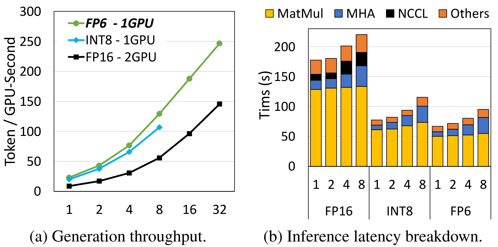
- 1.69X - 2.65X higher throughput than FP16 baseline.
- Up to 2.31X higher throughput than INT8 with batch size 32.
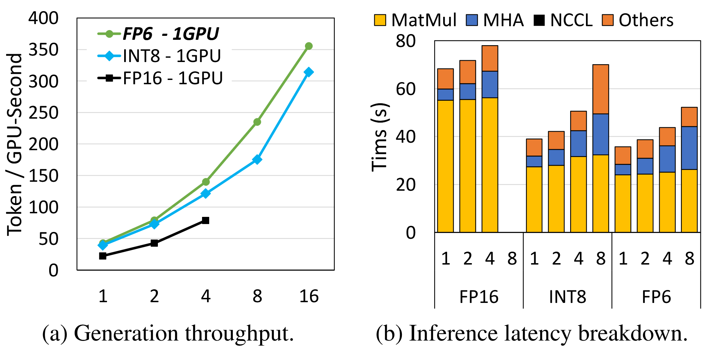
- 1.91X/1.86X/1.78X higher throughput than FP16 at batch sizes 1/2/4
- 1.09X−1.34X higher throughput than INT8